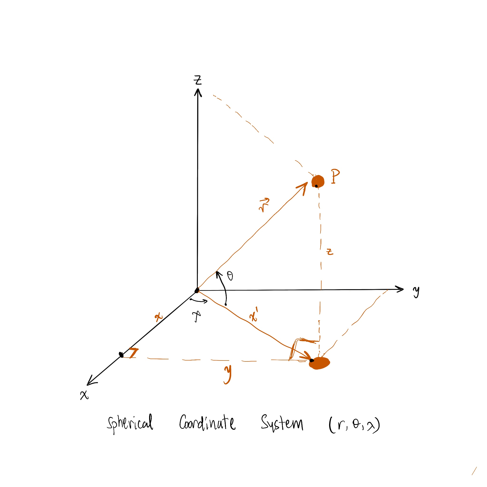
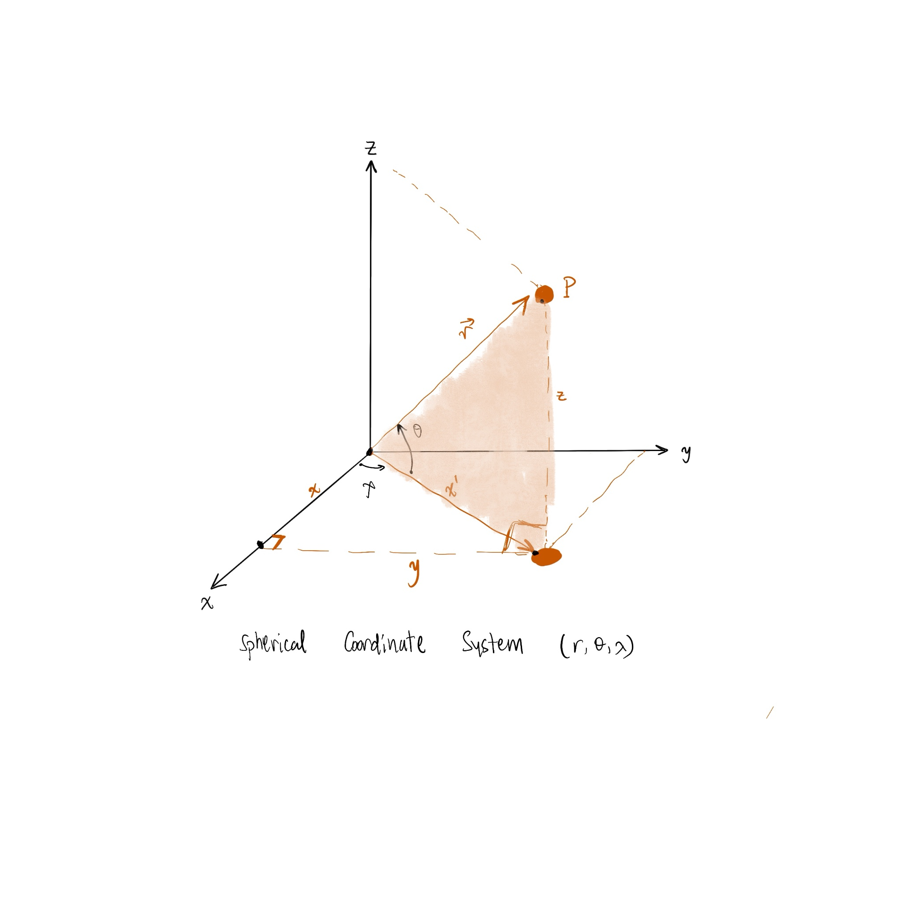
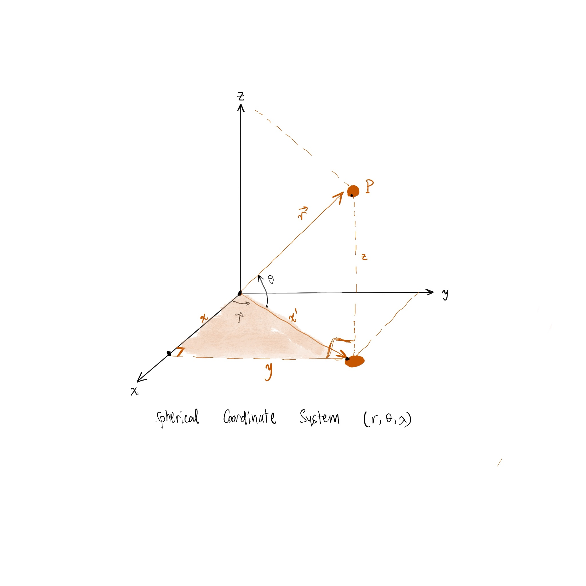

Quasi-Geostrophic Shallow-Water Potential-Vorticity Equations: On a Sphere
In this section you will find the derivations similar to that of the previous sections, so i will move forward with some derivations.
Calculus: Spherical Coordinates
I will start by deriving the gradient, divergence and curl operators in spherical coordinates.
Coordinate System
The spherical cooridinate system is defined by the physics notions as \((r,\theta,\phi)\). But for the sake of homogenity with the papers and reference books, I will use \((r,\theta,\lambda)\), where \(\lambda\) is the longitude and \(\theta\) is the latitude.

This figure shows the spherical coordinate system, where \(r\) is the distance from the origin \(r = |\vec{r}|\), angle \(\theta\) is the angle between \(r\) and the z-axis (latitude), and angle \(\lambda\), (azimuth), is the angle between the x-axis and the projection of \(r\) on the xy-plane (longitude).
The beautiful use of the spherical coordinates, which may help you to visualize the system, is to specify positions on the Earth's surface. By choosing the origin at the center of the Earth, the radius of the Earth is \(R\), the positions on the surface can be specified by giving just the angles \(\theta\) and \(\lambda\). If the z-axis coincide with the Earth's rotation axis, then \(\theta\) is the latitude and you may see "colatitude", since traditionally latitude is measured up from the equator, and \(\lambda\) is the longitude.
Important note: This derivation is different from the spherical coordinates derivations as \(\theta\) is from the equator (xy-plane) to the z-axis. Some notations will change for example the scale factor from the normal latitude and longitude are \(h_2 = r\) and \(h_3 = r \sin \theta\) respectively where as for the colatitude case \(h_2 = r\) and \(h_3 = r \cos \theta\).


From the first figure we can get the following relations:
\begin{equation}
\begin{aligned}
&\bullet \cos \theta = \frac{x'}{r} \rightarrow x' = r \cos \theta \\
&\bullet \sin \theta = \frac{z}{r} \rightarrow z = r \sin \theta
\end{aligned}
\end{equation}
From the second figure we can get the following relations:
\begin{equation}
\begin{aligned}
&\bullet \cos \lambda = \frac{x}{x'} \rightarrow x = r \cos \theta \cos \lambda \\
&\bullet \sin \lambda = \frac{y}{x'} \rightarrow y = r \cos \theta \sin \lambda
\end{aligned}
\end{equation}
Hence, the position vector \(\vec{r}\) can be written as:
\begin{equation}
\begin{aligned}
x &= r \cos \theta \cos \lambda \\
y &= r \cos \theta \sin \lambda \\
z &= r \sin \theta
\end{aligned}
\end{equation}
Getting the unit vectors:
\begin{equation}
\begin{aligned}
\bullet \hat{e_r} &= \frac{\frac{\partial \vec{e_r}}{\partial r}}{|\vec{e_r}|}=\frac{\frac{\partial \vec{r}}{\partial r}}{|vec{e_r}|}\\
&= \frac{(\cos \theta \cos \lambda , \cos \theta \sin \lambda, \sin \theta) }{\sqrt{(\cos \theta \cos \lambda)^2 + (\cos \theta \sin \lambda)^2 + (\sin \theta)^2}}\\
&= \frac{(\cos \theta \cos \lambda , \cos \theta \sin \lambda, \sin \theta) }{1} \\
&= (\cos \theta \cos \lambda , \cos \theta \sin \lambda, \sin \theta) = \vec{e_r} \\
\bullet \hat{e_\theta} &= \frac{(-r\sin\theta \cos \lambda, -r\sin \theta \sin \lambda, r\cos \theta )}{\sqrt{r^2 \sin^2 \theta (\cos^2 \lambda + \sin^2 \lambda) + r^2 \cos^2 \theta}}\\
& = \frac{(-r\sin\theta \cos \lambda, -r\sin \theta \sin \lambda, r\cos \theta )}{\sqrt{r^2 (\sin^2 \theta+\cos^2 \theta)}}\\
& = \frac{1}{r} \vec{e_\theta}\\
\bullet \hat{e_\lambda} &= \frac{(-r\cos\theta \sin \lambda, r\cos \theta \cos \lambda, 0)}{\sqrt{r^2 \cos^2 \theta (\sin^2 \lambda + \cos^2 \lambda)}}\\
& = \frac{(-r\cos\theta \sin \lambda, r\cos \theta \cos \lambda, 0)}{r \cos \theta}\\
& = \frac{1}{r\cos\theta} \vec{e_\lambda}
\end{aligned}
\end{equation}
Write the differential of the position vector as the followiing:
\begin{equation}
\begin{aligned}
d\vec{r} &= \frac{\partial \vec{r}}{\partial r} dr + \frac{\partial \vec{r}}{\partial \theta} d\theta + \frac{\partial \vec{r}}{\partial \lambda} d\lambda \\
&= \vec{e_r} dr + \vec{e_\theta} d\theta + \vec{e_\lambda} d\lambda \\
&= \hat{e_r} dr + r \hat{e_\theta} d\theta + r\cos \theta \hat{e_\lambda} d\lambda
\end{aligned}
\end{equation}
In order to transform the normalized basis \((\hat{e_x}, \hat{e_y}, \hat{e_z})\) to the spherical basis \((\hat{e_r}, \hat{e_\theta}, \hat{e_\lambda})\), we need to use Cramer's rule. We have now the following relations from (4):
\begin{equation}
\begin{aligned}
&\bullet \hat{e_r} = \cos \theta \cos \lambda \hat{e_x} + \cos \theta \sin \lambda \hat{e_y} + \sin \theta \hat{e_z} \\
&\bullet \hat{e_\theta} = -\sin \theta \cos \lambda \hat{e_x} - \sin \theta \sin \lambda \hat{e_y} + \cos \theta \hat{e_z} \\
&\bullet \hat{e_\lambda} = -\sin \lambda \hat{e_x} + \cos \lambda \hat{e_y}
\end{aligned}
\end{equation}
Writing the differential of the position vector in spherical coordinates as \(Ax=b\):
\begin{equation}
\begin{bmatrix}
\hat{e_r}\\
\hat{e_\theta}\\
\hat{e_\lambda}
\end{bmatrix}
=
\begin{bmatrix}
\cos \theta \cos \lambda & \cos \theta \sin \lambda & \sin \theta \\
-\sin \theta \cos \lambda & -\sin \theta \sin \lambda & \cos \theta \\
-\sin \lambda & \cos \lambda & 0
\end{bmatrix}
\begin{bmatrix}
\hat{e_x}\\
\hat{e_y}\\
\hat{e_z}
\end{bmatrix}
\end{equation}
The determinant of the transformation matrix is:
\begin{equation}
\begin{aligned}
D=|A| &= \begin{vmatrix}
\cos \theta \cos \lambda & \cos \theta \sin \lambda & \sin \theta \\
-\sin \theta \cos \lambda & -\sin \theta \sin \lambda & \cos \theta \\
-\sin \lambda & \cos \lambda & 0
\end{vmatrix} \\
&= \cos \theta \cos \lambda (-\cos \theta \cos \lambda) - \cos \theta \sin \lambda (\sin \lambda \cos \theta) + \sin \theta (-\sin \theta \cos^2 \lambda -\sin^2 \lambda \sin \theta) \\
&= -\cos^2 \theta \cos^2 \lambda - \cos^2 \theta \sin^2 \lambda - \sin^2 \theta \cos^2 \lambda - \sin^2 \theta \sin^2 \lambda \\
&= -\cos^2 \theta - \sin^2 \theta = -1
\end{aligned}
\end{equation}
Getting \(D_x, D_y,D_y\):
\begin{equation}
\begin{aligned}
D_x &=\begin{vmatrix}
\hat{e_r} & \cos \theta \sin \lambda & \sin \theta \\
\hat{e_\theta} & -\sin \theta \sin \lambda & \cos \theta \\
\hat{e_\lambda} & \cos \lambda & 0
\end{vmatrix}\\
&= \hat{e_r} (-\cos \lambda \cos\theta) - \cos \theta \sin \lambda (-\hat{e_\lambda} \cos \theta) + \sin \theta (\hat{e_\theta} \cos \lambda+ \hat{e_\lambda} \sin \theta \sin \lambda)\\
&= \hat{e_r}( -\cos \lambda \cos \theta) + \hat{e_\lambda}(\cos^2 \theta \sin \lambda)+ \hat{e_\theta} \sin \theta \cos \lambda + \hat{e_\lambda} \sin^2 \theta \sin \lambda\\
&= \hat{e_r}(-\cos \lambda \cos \theta) + \hat{e_\theta} \sin \theta \cos \lambda + \hat{e_\lambda} \sin \lambda
\end{aligned}
\end{equation}
Hence \(\hat{e_x}\) can be written as:
\begin{equation}
\hat{e_x} = \frac{D_x}{D} = \cos \lambda \cos \theta \hat{e_r} -\sin \theta \cos \lambda \hat{e_\theta} - \sin \lambda \hat{e_\lambda}
\end{equation}
Similarly, we can get \(\hat{e_y}\) and \(\hat{e_z}\):
\begin{equation}
\begin{aligned}
D_y &= \begin{vmatrix}
\cos \theta \cos \lambda & \hat{e_r} & \sin \theta \\
-\sin \theta \cos \lambda & \hat{e_\theta} & \cos \theta \\
-\sin \lambda & \hat{e_\lambda} & 0
\end{vmatrix}\\
&= \cos \theta \cos \lambda (-\hat{e_\lambda} \cos \theta) -\hat{e_r}(\sin \theta \cos \theta)+\sin \theta(\hat{e_\lambda}(-\sin \theta \cos \lambda) + \hat{e_\theta} \sin \lambda)\\
&= \hat{e_\lambda}( -\cos^2 \theta \cos \lambda - \sin^2 \theta \cos \lambda) + \hat{e_r}(-\sin \lambda \cos\theta) +\hat{e_\theta}(\sin \theta \sin \lambda)
\end{aligned}
\end{equation}
Hence \(\hat{e_y}\) can be written as:
\begin{equation}
\hat{e_y} = \frac{D_y}{D} = \sin \lambda \cos \theta \hat{e_r} + -\sin \lambda \sin \theta \hat{e_\theta} + \cos \lambda \hat{e_\lambda}
\end{equation}
\begin{equation}
\begin{aligned}
D_z &= \begin{vmatrix}
\cos \theta \cos \lambda & \cos \theta \sin \lambda & \hat{e_r} \\
-\sin \theta \cos \lambda & -\sin \theta \sin \lambda & \hat{e_\theta} \\
-\sin \lambda & \cos \lambda & \hat{e_\lambda}
\end{vmatrix}\\
&= \cos \theta \cos \lambda (-\hat{e_\lambda} \sin \theta \sin \lambda - \hat{e_\theta} \cos \lambda) - \sin \lambda \cos \theta(-\hat{e_\lambda}\sin \theta \cos \lambda + \hat{e_\theta} \sin \lambda) + \hat{e_r}(-\cos^2\lambda \sin \theta - \sin^2 \lambda \sin \theta)\\
&= \hat{e_r}(-\sin\theta) + \hat{e_\theta}(-\sin^2 \lambda \cos \theta - \cos^2 \lambda \cos \theta) + \hat{e_\lambda}(-\sin\theta \sin \lambda \cos \theta \cos \lambda +\sin\theta \sin \lambda \cos \theta \cos \lambda) \\
&= -\sin \theta \hat{e_r} - \cos \theta \hat{e_\theta}
\end{aligned}
\end{equation}
Hence \(\hat{e_z}\) can be written as:
\begin{equation}
\hat{e_z} = \frac{D_z}{D} = \sin \theta \hat{e_r} + \cos \theta \hat{e_\theta}
\end{equation}
Gradient, Divergence and Curl Operators
In order to get the gradient, divergence and curl operators, we need to get the scale factors \(h_1,h_2,h_3\) from (5) \(h_1 = 1, h_2 = r, h_3 = r \cos \theta\). I will not go in depth here and derive each operator, but i will give the general form of each operator in spherical coordinates, and then switch them to our case:
\begin{equation}
\begin{aligned}
&\bullet \nabla \Phi = \frac{1}{h_1} \frac{\partial \Phi}{\partial r} \hat{e_r} + \frac{1}{h_2} \frac{\partial \Phi}{\partial \theta} \hat{e_\theta} + \frac{1}{h_3} \frac{\partial \Phi}{\partial \lambda} \hat{e_\lambda} \\
&\bullet \nabla \cdot \vec{A} = \frac{1}{h_1 h_2 h_3} \left[ \frac{\partial}{\partial r} (h_2 h_3 A_r) + \frac{\partial}{\partial \theta} (h_3 h_1 A_\theta) + \frac{\partial}{\partial \lambda} (h_1 h_2 A_\lambda) \right] \\
&\bullet \nabla \times \vec{A} = \frac{1}{h_1 h_2 h_3} \begin{vmatrix}
h_1 \hat{e_r} & h_2 \hat{e_\theta} & h_3 \hat{e_\lambda} \\
\frac{\partial}{\partial r} & \frac{\partial}{\partial \theta} & \frac{\partial}{\partial \lambda} \\
h_1 A_r & h_2 A_\theta & h_3 A_\lambda
\end{vmatrix}\\
&\bullet \nabla^2 \Phi = \frac{1}{h_1 h_2 h_3} \left[ \frac{\partial}{\partial r} \left( \frac{h_2 h_3}{h_1} \frac{\partial \Phi}{\partial r} \right) + \frac{\partial}{\partial \theta} \left( \frac{h_3 h_1}{h_2} \frac{\partial \Phi}{\partial \theta} \right) + \frac{\partial}{\partial \lambda} \left( \frac{h_1 h_2}{h_3} \frac{\partial \Phi}{\partial \lambda} \right) \right]
\end{aligned}
\end{equation}
In our scenario, the equations governed by \((\lambda , \theta)\), so the operators will be:
\begin{equation}
\begin{aligned}
&\bullet \nabla \Phi = \frac{\partial \Phi}{\partial r} \hat{e_r} + \frac{1}{r} \frac{\partial \Phi}{\partial \theta} \hat{e_\theta} + \frac{1}{r \cos \theta} \frac{\partial \Phi}{\partial \lambda} \hat{e_\lambda} \\
&\bullet \nabla \cdot \vec{A} = \frac{1}{r^2 \cos \theta} \left[ \frac{\partial}{\partial r} (r^2 \cos \theta A_r) + \frac{\partial}{\partial \theta} (r\cos \theta A_\theta) + \frac{\partial}{\partial \lambda} (r A_\lambda) \right] \\
&\bullet \nabla \times \vec{A} = \frac{1}{r^2 \cos \theta} \begin{vmatrix}
\hat{e_r} & r \hat{e_\theta} & r \cos \theta \hat{e_\lambda} \\
\frac{\partial}{\partial r} & \frac{\partial}{\partial \theta} & \frac{\partial}{\partial \lambda} \\
A_r & r A_\theta & r \cos \theta A_\lambda
\end{vmatrix}\\
&\bullet \nabla^2 \Phi = \frac{1}{r^2} \frac{\partial}{\partial r}(r^2 \frac{\partial \Phi}{\partial r}) + \frac{1}{r^2 \cos \theta} \frac{\partial}{\partial \theta}(\cos \theta \frac{\partial \Phi}{\partial \theta}) + \frac{1}{r^2 \cos^2 \theta} \frac{\partial^2 \Phi}{\partial \lambda^2}
\end{aligned}
\end{equation}
Shallow-water primitive equations in Spherical Coordinates
Consider some elementary effects of rotation on a fluid and derive the Coriolis and centrifugal forces, and then we write down the equations of motion appropriate for motion on a sphere. Then we discuss some approximations to the equations of motion that are appropriate for large-scale flow in the ocean and atmosphere, in particular the hydrostatic and geostrophic approximations.
Finding the Effective Rotation Rate: \(\vec{\Omega}_{flow}\)
In spherical coordinates, the defining unit vectors are:
- \(\hat{i}\): pointing eastwards and parallel to a line of latitude.
- \(\hat{j}\): pointing northwards and parallel to a line of longitude(meridian).
- \(\hat{k}\): pointing vertically upwards.
Defining velocity: \((u,v,w)\), where \(u\) is the zonal velocity which produces displacement \(\frac{\partial \lambda}{\partial t} = \frac{u}{r\cos \theta}\), \(v\) is the meridional velocity which produces displacement \(\frac{\partial \theta}{\partial t} = \frac{v}{r}\) and this give rise to the local effective vector rotation rate around the local zonal axis of \(- \frac{v}{r} \hat{i}\). You may notice the negative sign which is because a displacement in the direction of the north pole produces negative rotational displacement around the vertical axis.
A rotation around the Earth's rotation axis may be written as:
\begin{equation}
\vec{\Omega} = \Omega (\vec{j} \cos \theta + \vec{k} \sin \theta)
\end{equation}
where \(\Omega\) is the magnitude of the Earth's angular velocity is considered to be \(\frac{u}{r\cos\theta}\), then vector rotation becomes:
\begin{equation}
\vec{\Omega} = (\frac{u}{r \cos\theta})(\vec{j} \cos \theta + \vec{k} \sin \theta) = \frac{u}{r} \vec{j} + \frac{u \tan \theta}{r} \vec{k}
\end{equation}
Thus the total effective rotation rate is:
\begin{equation}
\vec{\Omega}_{flow} = -\vec{i} \frac{v}{r} +\vec{j} \frac{u}{r} + \vec{k} \frac{u \tan \theta}{r}
\end{equation}
Building the Coriolis Term
The Coriolis parameter is defined as:
\begin{equation}
\begin{aligned}
f &= 2\vec{\Omega} \times \vec{v} \\
&= \begin{vmatrix}
\vec{i} & \vec{j} & \vec{k} \\
0 & 2\Omega \cos \theta & 2\Omega \sin \theta \\
u & v & w
\end{vmatrix}\\
&=\vec{i} (2\Omega\cos\theta w - 2\Omega \sin \theta v) - \vec{j} (2\Omega \sin \theta u)-\vec{k}(2\Omega \cos \theta u)
\end{aligned}
\end{equation}
\begin{equation}
\begin{aligned}
&\vec{\Omega}_{flow} \times \vec{i} = \frac{u}{\cos \theta}(\vec{j} \sin \theta - \vec{k} \cos \theta)\\
&\vec{\Omega}_{flow} \times \vec{j} = -\vec{k}\frac{v}{r} - \vec{i} \frac{u\tan\theta}{r}\\
&\vec{\Omega}_{flow} \times \vec{k} = \vec{j} \frac{v}{r} + \vec{i} \frac{u}{r}
\end{aligned}
\end{equation}
Now we can write the forces \(fv\) and \(fu\) in the equations of motion as the following, but keep in mind that they will be reduced later for approximation purposes:
\begin{equation}
\begin{aligned}
&\bullet (2\Omega +\frac{u}{r\cos\theta})(\cos \theta w - \sin \theta v) \\
&\bullet (2\Omega + \frac{u}{r\cos\theta}) u\sin\theta + \frac{wv}{r}
\end{aligned}
\end{equation}
Approximations
Doing some approximations we can neglect the vertical velocities \(\frac{uw}{r}\) and \(\frac{vw}{r}\). The equations of motion in spherical coordinates are governed by \((\lambda , \theta)\):
\begin{equation}
\begin{aligned}
&\bullet \frac{Du}{Dt} - (2\Omega \sin \theta + \frac{u \tan \theta}{R})v + \frac{g}{R\cos \theta} \frac{\partial \eta}{\partial \lambda} =0 \\
&\bullet \frac{Dv}{Dt} + (2\Omega \sin \theta + \frac{u \tan \theta}{R})u + \frac{g}{R} \frac{\partial \eta}{\partial \theta} =0 \\
&\bullet \frac{DH}{Dt}+H (\frac{1}{R\cos \theta}\frac{\partial u}{\partial \lambda} + \frac{1}{R\cos \theta}\frac{\partial}{\partial \theta}(v\cos \theta))=0
\end{aligned}
\end{equation}
where the material derivative,
\begin{equation}
\frac{D}{Dt} = \frac{\partial}{\partial t} + \frac{u}{R\cos \theta}\frac{\partial}{\partial \lambda} + \frac{v}{R} \frac{\partial}{\partial \theta}
\end{equation}
- \(u,v\) are the velocities along increasing \(\lambda, \theta \) directions respectively.
- \(R\) is the radius of the Earth
- \(\Omega\) is the magnitude of its angular velocity
- \(g\) is the gravitational acceleration.
- \(H=\eta + D\) is the height of a column of water above a certain reference level, where \(h_B\) is assumed to be zero.
- The Coriolis parameter is \(f = 2\Omega \sin \theta\) where as the centrifugal acceleration is \(\frac{u \tan \theta}{R}\).
Cross differentiate the first equation in (23) with respect to \(\theta\) and the second equation with respect to \(\lambda\):
\begin{equation}
\frac{1}{R\cos \theta} \frac{\partial }{\partial \lambda}([2])- \frac{1}{R\cos \theta} \frac{\partial }{\partial \theta}(\cos \theta ([1]))=0
\end{equation}
to eliminate pressure terms, we obtain the following equation:
\begin{equation}
\frac{D}{Dt}(\zeta +f) + (\zeta + f) (\frac{1}{R\cos \theta} \frac{\partial u}{\partial \lambda} + \frac{1}{R\cos \theta} \frac{\partial}{\partial \theta}(v\cos \theta)) = 0
\end{equation}
where the local normal component component of the relative vorticity is defined as:
\begin{equation}
\zeta = \frac{1}{R\cos \theta} \frac{\partial v}{\partial \lambda} - \frac{1}{R\cos \theta} \frac{\partial}{\partial \theta}(u\cos \theta)
\end{equation}
Now, substitute (23) in (26):
\begin{equation}
\begin{aligned}
&\frac{D}{Dt}(\zeta +f)+ (\zeta +f)(\frac{1}{R\cos\theta}\frac{\partial u}{\partial \lambda} + \frac{1}{R\cos\theta}\frac{\partial}{\partial \theta}(v\cos\theta)) = 0 \\
& \frac{D}{Dt}(\zeta +f) +(\zeta +f)(-\frac{DH}{Dt} \frac{1}{H})=0\\
&\frac{D}{Dt}(\zeta +f) - (\frac{\zeta+f}{H})\frac{DH}{Dt} =0\\
& \frac{D}{Dt}(\frac{\zeta+f}{H})= \frac{DQ}{Dt}=0
\end{aligned}
\end{equation}
This is the statement of the conservation of potential vorticity, where we define the potential vorticity as:
\begin{equation}
Q = \frac{\zeta + f}{H}
\end{equation}
Represent \(Q\) in a different form. But before that let's define the following:
\begin{equation}
\begin{aligned}
\bullet (u_\psi, v_\psi)& =(-\frac{1}{R}\frac{\partial \psi}{\partial \theta}, \frac{1}{R\cos \theta} \frac{\partial \psi}{\partial \lambda}) \\
\bullet \zeta &= \frac{1}{R\cos \theta} \frac{\partial v}{\partial \lambda} - \frac{1}{R\cos \theta} \frac{\partial}{\partial \theta}(u\cos \theta) \\
&=\frac{1}{R\cos \theta} \frac{\partial}{\partial \lambda}\frac{1}{R\cos \theta} \frac{\partial \psi}{\partial \lambda} + \frac{1}{R\cos \theta} \frac{\partial}{\partial \theta}(\cos \theta \frac{1}{R}\frac{\partial \psi}{\partial \theta}) \\
&= \frac{1}{R^2 \cos^2 \theta} \frac{\partial^2 \psi}{\partial \lambda^2} + \frac{1}{R^2 \cos\theta} \frac{\partial}{\partial \theta}(\cos \theta \frac{\partial \psi}{\partial \theta}) \\
&= \nabla_{s}^2 \psi
\end{aligned}
\end{equation}
where \(\psi\) denotes the stream function of the non-divergent part of the flow. Now, substitute (30) into (29):
\begin{equation}
\begin{aligned}
Q &= \frac{\zeta +f}{H} \\
& = \frac{D}{D+\eta} (\frac{1}{R\cos \theta}\frac{\partial v}{\partial \lambda} - \frac{1}{R\cos \theta} \frac{\partial}{\partial \theta}(u\cos \theta) + 2\Omega \sin \theta) \\
& = \frac{D}{D+\eta} \nabla_{s}^2 \psi - 2\Omega \sin \theta (\frac{\eta}{\eta + D}) + 2\Omega \sin \theta
\end{aligned}
\end{equation}
where \(H = \frac{D + \eta}{D}\) is the relative change in the height of the fluid column.
Assume \(\eta \ll D\), this implies that the height of the fluid column is much larger than the height of the topography. Hence, the potential vorticity can be written as:
\begin{equation}
Q = \nabla_{s}^2 \psi-2\Omega \sin \theta \frac{\eta}{D} + 2\Omega \sin \theta
\end{equation}
where we can define the potential voricity anomaly as:
\begin{equation}
q = \nabla_{s}^2 \psi - 2\Omega \sin \theta \frac{\eta}{D}
\end{equation}
To formulate a balance between mass field \(\eta\) and the nondivergent wind field \(\psi\), we should convert (32) into an invertibility principle meaning a relation between \(q\) and \(h\) or \(\psi\). Two assumptions must hold:
- \(\psi\) and \(h\) are related by linear balance condition:
\begin{equation}
\nabla \cdot (2\Omega \sin \theta \nabla \psi)= g \nabla^2 \eta
\end{equation}
- \(2\Omega \sin \theta\) is considered to be slowly varying in space and time, so the linear balance condition becomes:
\begin{equation}
\nabla^2 (g\eta - 2\Omega \sin\theta \psi) =0
\end{equation}
For which the local balance becomes:
\begin{equation}
g\eta = 2\Omega \sin \theta \psi
\end{equation}
The invertibility principle is the following:
\begin{equation}
\begin{aligned}
Q& = \nabla_{s}^2 \psi - 2\Omega \sin \theta \frac{\eta}{D} + 2\Omega \sin \theta \\
& = \nabla_{s}^2 \psi - \frac{2\Omega \sin \theta 2 \Omega \sin \theta \psi}{D g}+ 2\Omega \sin \theta \\
&= \nabla_{s}^2 \psi - \frac{f^2 \psi}{gD} + f\\
&= \nabla_{s}^2 \psi - \frac{\psi}{L_d^2} + f
\end{aligned}
\end{equation}
where the deformation radius is defined as \(L_d = \sqrt{\frac{gD}{f^2}}\).